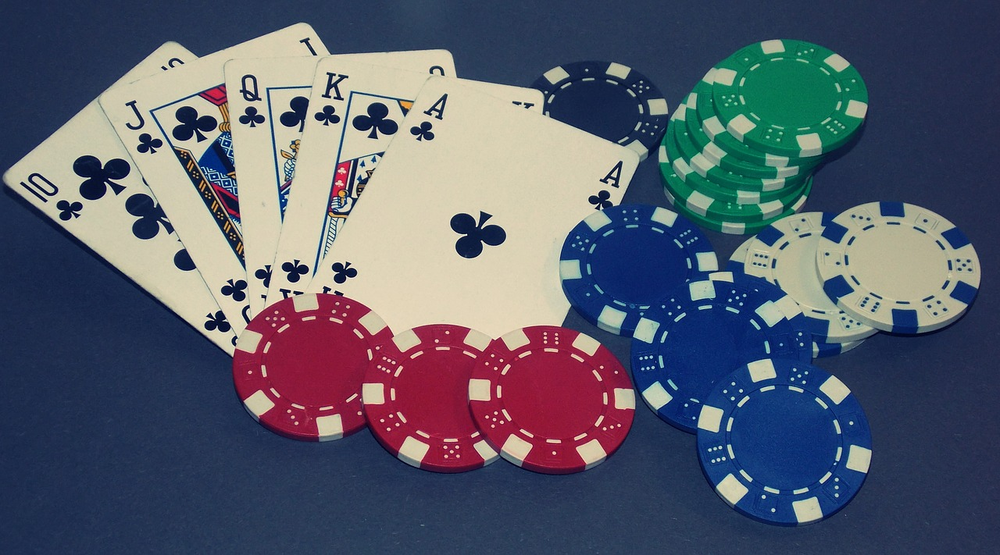

Poker

Texas hold 'em is one of the most popular variants of the card game of poker. Two cards, known as hole cards, are dealt face down to each player, and then five community cards are dealt face up in three stages. The stages consist of a series of three cards ("the flop"), later an additional single card ("the turn" or "fourth street"), and a final card ("the river" or "fifth street"). Each player seeks the best five card poker hand from any combination of the seven cards; the five community cards and their two hole cards. Players have betting options to check, call, raise, or fold. Rounds of betting take place before the flop is dealt and after each subsequent deal. The player who has the best hand and has not folded by the end of all betting rounds wins all of the money bet for the hand, known as the pot. Retrieved from https://en.wikipedia.org/wiki/Texas_hold_%27em on March 10, 2022